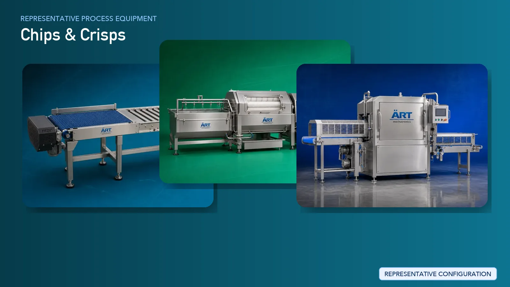

Chips / Crisps Manufacturing Plant & Machinery Solutions
Chips and crisps manufacturing is a fast-growing segment in the global snack food industry, covering products such as potato chips, banana chips, and extruded snack crisps.

About Chips & Crisps processing
ART Mechatronics provides complete turnkey solutions for chips and crisps manufacturing plants, offering advanced systems for washing, peeling, slicing, frying, seasoning, and packaging. Our solutions are designed for high-speed production, consistent product quality, and efficient plant operations.
Complete Chips / Crisps Process Flow
Raw materials such as potatoes, bananas, or other inputs are received and fed into the processing line.
Ensures smooth and continuous production flow.
Raw materials are washed to remove dirt, mud, and impurities.
Ensures hygiene and product safety.
Outer skin is removed to prepare the material for slicing.
Raw materials are sliced into uniform thickness for consistent frying.
Ensures:
- Uniform thickness
- Even frying
- Consistent texture
Slices may be blanched to improve color and texture.
Slices are fried in oil under controlled temperature.
Ensures:
- Crispy texture
- Uniform cooking
- Consistent color
Excess oil is removed to improve product quality.
Seasoning is applied to enhance taste and flavor.
Ensures:
- Uniform flavor distribution
- Consistent taste
Final inspection ensures product consistency and quality.
Finished chips are packed into pouches.
Suitable for high-speed snack production.
Machinery Required for Chips / Crisps Plant
- Material Handling Systems
- Washing Machine
- Peeling Machine
- Slicing Machine
- Blanching System
- Fryer (Batch / Continuous)
- De-Oiling Machine
- Seasoning Drum
- Cooling Conveyor
- Inspection System
- Packaging Machines
Turnkey Chips Plant Solutions
ART Mechatronics offers complete turnkey solutions for chips and crisps manufacturing plants, including:
- Process design & plant layout
- Washing, slicing, and frying systems
- Seasoning and coating systems
- Automation & control panels
- Packaging line integration
- Installation & commissioning
- After-sales support
We customize solutions based on:
- Product type (potato / banana / extruded snacks)
- Production capacity
- Frying method
- Packaging format
Why Choose Art Mechatronics
- Expertise in snack food processing systems
- Advanced frying and seasoning technology
- High-speed automated production lines
- Hygienic food-grade machinery design
- Consistent product quality
- Global export capability
Machinery in a Chips & Crisps plant
Where it's used
Get pricing & specs for the Chips & Crisps plant
Share the product, target capacity, current process and plant location. These details help our engineers discuss the right machine or line configuration.
One partner, from design to start-up
ART Mechatronics designs, manufactures, installs and commissions your Chips & Crisps solution with regional presence in India, UAE and Thailand.